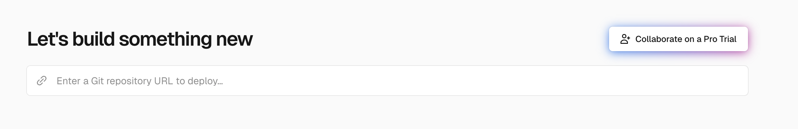
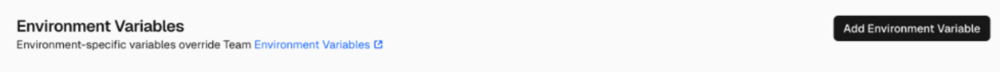
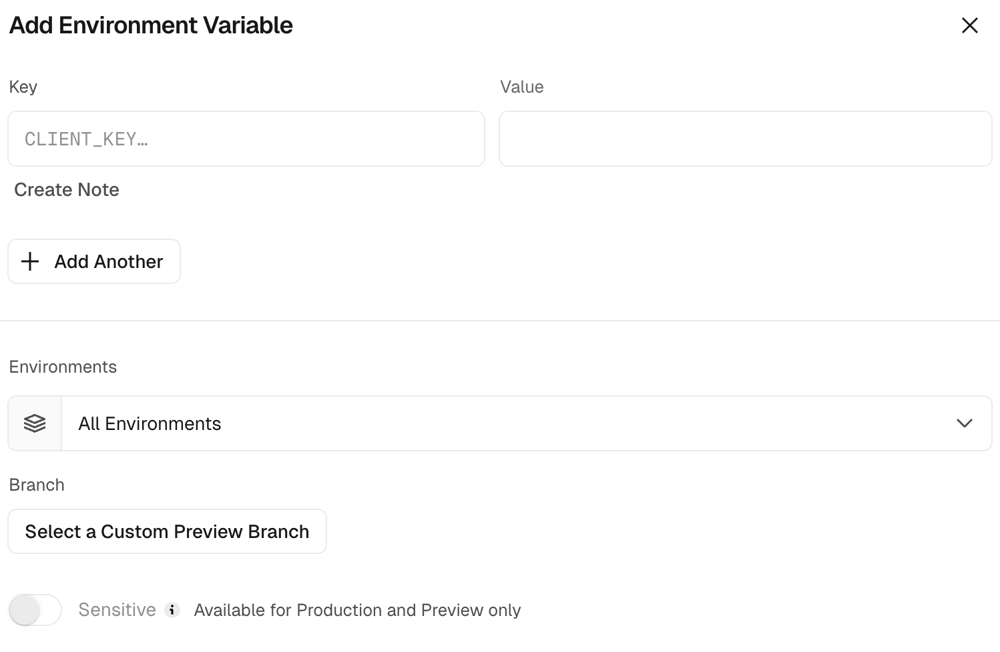
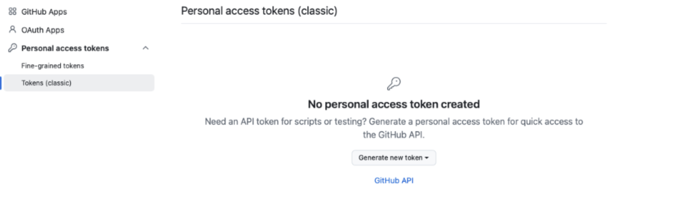

Infra
GitHub 프로필 페이지 꾸미기: Readme Stats와 Trophy를 Vercel에 배포한 기록
`github-readme-stats`와 `github-profile-trophy`를 포크해 Vercel에 연결하고, GitHub 토큰까지 붙여서 프로필 README용 카드를 만든 과정을 한 번에 정리했다.
개요
GitHub 프로필 README를 조금 더 보기 좋게 꾸미고 싶어서 카드형 통계와
트로피 이미지를 붙여보기로 했다. 가장 많이 쓰는 프로젝트인
github-readme-stats와 github-profile-trophy를
그대로 쓰기보다, 직접 포크해서 Vercel에 연결해 두면 주소를 안정적으로 관리하기 편했다.
처음에는 그냥 README에 이미지 주소만 넣으면 끝날 줄 알았는데, 실제로는 저장소를 포크하고, Vercel에 따로 배포하고, GitHub 토큰까지 연결해야 원하는 결과가 나왔다. 한 번 세팅해두면 그다음부터는 README에서 URL만 가져다 쓰면 되기 때문에 초기 설정 과정만 잘 넘기면 꽤 만족도가 높은 작업이었다.
시작 전에 준비한 것
먼저 아래 두 저장소를 내 계정으로 포크했다.
https://github.com/anuraghazra/github-readme-statshttps://github.com/ryo-ma/github-profile-trophy
그다음 Vercel은 GitHub 계정으로 가입하고 로그인했다. 저장소 접근 권한을 바로 연결할 수 있어서 GitHub 로그인으로 시작하는 쪽이 훨씬 수월했다.
Add New... 버튼을 눌러 새 프로젝트 생성을 시작한다.
Vercel에서 프로젝트 만들기
Vercel 대시보드에서 Add New... -> Project로 들어가면,
방금 포크해둔 저장소를 Import 할 수 있다. 이때 두 저장소를 한 번에 묶는 것이 아니라
각각 별도 프로젝트로 만들어야 한다.
프로젝트는 Private 상태로 두고, 이름은 나중에 헷갈리지 않도록
github-readme-stats-vercel처럼 저장소 이름 뒤에 구분자를 붙여서 정리했다.
목록에서 한눈에 찾기 쉬워서 생각보다 이 부분이 편했다.

Import 뒤에 보이는 Framework Settings에서는 Build Command, Output Directory 같은 항목을 굳이 수정하지 않았다. 자동으로 잡히는 기본값을 그대로 두고 배포하는 편이 훨씬 수월했다.
github-readme-stats 배포
github-readme-stats는 Import 후 설정 화면 하단의
Environment Variables에서 환경 변수를 하나 추가해야 했다.

Add Environment Variable를 눌러 환경 변수 추가를 시작한다.

PAT_1, Value에는 발급한 토큰 값을 입력한다.
Add Environment Variable를 누른다.Name에는PAT_1을 입력한다.Value에는 GitHub에서 발급한ghp_xxxx토큰 값을 넣는다.Deploy를 눌러 배포를 진행한다.
배포가 끝나면 Vercel이 제공하는 도메인이 생성된다. 나중에는 이 주소를 README 이미지 URL에 그대로 연결해서 사용했다.
github-profile-trophy 배포
트로피 쪽도 흐름은 거의 같았다. Vercel에서 저장소를 Import 하고 배포까지 가는 과정은 동일했다.
다만 내가 정리해둔 기준으로는 환경 변수 이름을 PAT_1이 아니라
GITHUB_TOKEN1로 넣었다.
- 포크한
github-profile-trophy저장소를 Import 한다. - 환경 변수에서
GITHUB_TOKEN1을 추가한다. - 값에는 동일하게
ghp_xxxx토큰을 입력한다. - Deploy를 눌러 배포를 마무리한다.
결국 두 프로젝트 모두 핵심은 GitHub 토큰을 연결하는 것이고, 실제 차이는 환경 변수 키 이름 정도였다.
GitHub PAT 토큰 발급
토큰은 GitHub 설정의 Personal access tokens (classic)에서 발급했다.
화면 경로를 따라가면 어렵지 않지만, 처음 찾을 때는 메뉴가 약간 깊게 들어가 있어서
한 번만 정확히 기억해두는 편이 좋았다.

Tokens (classic)로 들어가 Generate new token을 눌러 PAT를 발급한다.
- 토큰 이름은
vercel-readme-stats처럼 알아보기 쉽게 적는다. - 만료일은 관리 편의에 맞춰 정한다. 나는 갱신을 줄이기 위해 길게 두는 편을 택했다.
- 공개 데이터만 쓸 거라면 권한은 비워둬도 된다.
- 비공개 저장소의 커밋 수까지 반영하고 싶다면
repo권한을 추가한다.
토큰 값은 생성 직후에만 다시 볼 수 있다. 페이지를 벗어나기 전에 바로 복사해서 Vercel 환경 변수에 넣는 것이 가장 안전했다.
README에 붙일 때
배포가 끝난 뒤에는 각 프로젝트의 Vercel 도메인을 README에서 이미지 주소로 연결하면 된다. 예를 들면 아래처럼 정리할 수 있다.

실제로 해보니 프로필 README를 꾸미는 일은 단순히 예쁜 이미지를 붙이는 작업이 아니라, 그 이미지를 안정적으로 제공할 URL을 만드는 작업에 더 가까웠다. 한 번 배포 구조를 잡아두면 이후에는 README를 수정하는 것만으로 분위기를 꽤 많이 바꿀 수 있었다.